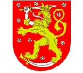
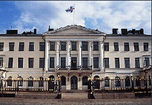
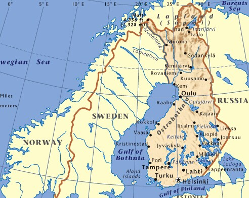

- 芬兰国旗
- 芬兰国徽
- 芬兰标志性建筑
- 芬兰地理位置
芬兰概况
芬兰位于欧洲北部
人口概况
约532万人(2009年底)。芬兰有两种官方语言:93%的人口所使用的芬兰语和6%人口的母语瑞典语。少数人口包括了萨米人、俄罗斯人、犹太人等。 大多数芬兰人(89%)信奉基督教路德宗, 大约1%的人口则信奉东正教。
芬兰经济
芬兰是一个高度工业化、自由化的市场经济体，人均产出超过美国、日本、法国、英国、德国等老牌强国，远高于欧盟平均水平，与其邻国瑞典相当。经济的主要支柱是制造业，主要以木材、金属、工程、电讯和电子工业为主。芬兰的通信产业以诺基亚为代表，非常发达，芬兰是号称因特网接入比例和人均手机持有量最高的国家。贸易对芬兰而言十分重要，GDP中大约三分之一来自出口。除了木材和少数矿产，芬兰的原材料、能源和一些工业组件都倚赖进口。
由于天气的原因，芬兰的农业仅维持在基本农产品自给自足的水平。林木业作为出口的主要支柱，为农村人口提供了第二个工作选择。芬兰在1999年加入欧元体制，截止到2013年是唯一使用欧元的北欧国家，在未来几年芬兰将更快地与西欧经济一体化。
在2013-2014年世界经济论坛年度竞争力排名中位居第三。近年来，受全球经济形势和欧债危机影响，芬经济增长滞缓，企业倒闭增加，失业上升。
外交关系
战后长期奉行同苏联保持睦邻友好关系、不介入大国冲突、同各国发展友好关系的“积极的和平中立政策”。冷战结束、苏联解体后, 芬兰对其外交政策进行了重大调整, 将发展同欧盟的关系作为外交重点。1995年1月1日起成为欧盟正式成员。芬仍坚持奉行军事不结盟和独立可靠的防务政策, 密切与北约的合作, 同时继续与俄罗斯保持睦邻关系, 支持俄融入国际社会。芬已正式承认183个国家, 与165个国家有外交关系(截至2004年)。
对外贸易
中芬经济互补性较强。1980年，芬给予我国普惠制待遇。近几年两国贸易增长很快。2004—2008年芬兰连续五年成为中国在北欧的最大贸易伙伴。据中国海关统计，2012年双边贸易额112.8亿美元，同比增长0.8%。2013年1—8月，中芬贸易额64.5亿美元，同比下降19.8%。
2005年5月，两国签署新的《中芬经济、工业和技术合作协定》。双方已举行19次经济、工业和技术合作联委会。2006年9月，两国签署在联委会下建立联合投资促进分委会的谅解备忘录。